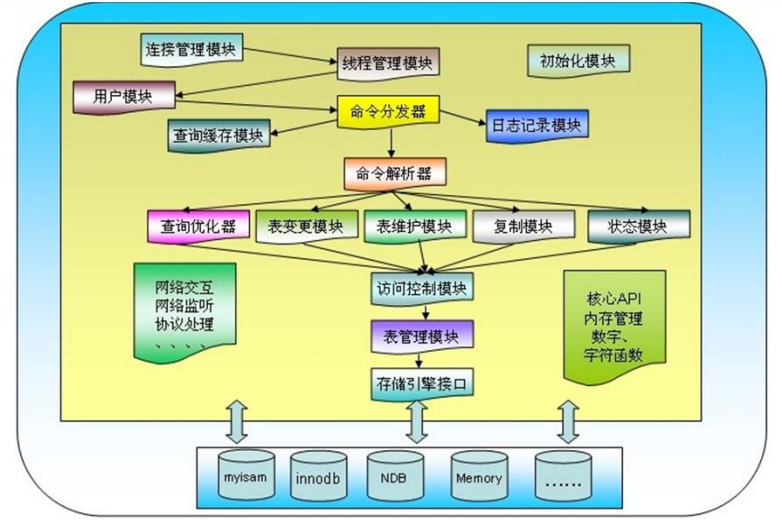

一、MySQL存储引擎介绍
存储引擎**是什么？**
例如，如果你在研究大量的临时数据，你也许需要使用内存存储引擎。内存存储引擎
能够在内存中存储所有的表格数据。又或者，你也许需要一个支持事务处理的数据库
(以确保事务处理不成功时数据的回退能力)。
这些不同的技术以及配套的相关功能在MySQL中被称作存储引擎。
下图是MySQL体系结构：

MySQL的存储引擎是MySQL体系架构中的重要组成部分，也是MySQL体系结构的核
心，它处于MySQL体系架构中Server端底层，是底层物理结构的实现，用于将数据以
各种不同的技术方式存储到文件或者内存中，不同的存储引擎具备不同的存储机制、索
引技巧和锁定水平。常见的MySQL存储引擎有InnoDB、MyISAM、Memory、Archive
等等，它们具备各自的特征，我们可以根据不同的具体应用来建立对应的存储引擎表。
MySQL常见的存储引擎有：
InnodDB：5.5版本之后的默认存储引擎，事务型数据库的首选引擎，支持ACID事务，支持
行级锁定
MyISAM：拥有较高的插入，查询速度，但不支持事务5.5版本之前的默认存储引擎
Performance_Schema：Performance_Schema数据库
Memory ：将所有数据存储在RAM中，以便在需要快速查找参考和其他类似数据的环境中进
行快速访问。适用存放临时数据。引擎以前被称为HEAP引擎MRG_MyISAM：使MySQL DBA
或开发人员能够对一系列相同的MyISAM表进行逻辑分组，并将它们作为一个对象引用。适用
于VLDB(Very Large DataBase)环境，如数据仓库
Archive ：为存储和检索大量很少参考的存档或安全审核信息，只支持SELECT和INSERT操
作；支持行级锁和专用缓存区
Federated联合：用于访问其它远程MySQL服务器一个代理，它通过创建一个到远程MySQL
服务器的客户端连接，并将查询传输到远程服务器执行，而后完成数据存取，提供链接单独
MySQL服务器的能力，以便从多个物理服务器创建一个逻辑数据库。非常适合分布式或数据集
市环境
BlackHole ：黑洞引擎，写入的任何数据都会消失，一般用于记录binlog做复制的中继
MariaDB支持的其它存储引擎：
OQGraph
SphinxSE
TokuDB
Cassandra
CONNECT
SQUENCE
下图是MySQL常见存储引擎比较：
InnoDB support for FULLTEXT indexes(全文索引) is available in MySQL 5.6.4 and later.
存储引擎比较：https://docs.oracle.com/cd/E17952_01/mysql-5.5-en/storage-engines.html
作为MySQL数据库发展过程中的默认引擎，接下来我们重点介绍下InnodDB及MyISAM存储引擎
二、InnoDB与MyISAM对比
MyISAM存储引擎
MyISAM特性：
不支持事务
表级锁定
读写相互阻塞，写入不能读，读时不能写
只缓存索引
不支持外键约束
不支持聚簇索引
读取数据较快，占用资源较少
不支持MVCC（多版本并发控制机制）高并发
崩溃恢复性较差
MySQL5.5.5前默认的数据库引擎
适用场景：只读（或者写较少）、表较小（可以接受长时间进行修复操作）
###
MyISAM引擎文件：
tbl_name.frm: 表格式定义
tbl_name.MYD: 数据文件
tbl_name.MYI: 索引文件
InnoDB存储引擎
InnoDB特性：
行级锁
支持事务，适合处理大量短期事务
读写阻塞与事务隔离级别相关
可缓存数据和索引
支持聚簇索引
崩溃恢复性更好
支持MVCC高并发
从MySQL5.5后支持全文索引
从MySQL5.5.5开始为默认的数据库引擎
InnoDB数据库文件：
所有InnoDB表的数据和索引放置于同一个表空间中
表空间文件：datadir定义的目录下
数据文件：ibddata1, ibddata2, …
每个表单独使用一个表空间存储表的数据和索引
启用：innodb_file_per_table=ON
两类文件放在数据库独立目录中
数据文件(存储数据和索引)：tb_name.ibd
表格式定义：tb_name.frm
管理存储引擎
查看mysql支持的存储引擎:
show engines;
查看当前默认的存储引擎:
show variables like ‘%storage_engine%’;
查看库中所有表使用的存储引擎
show table status from db_name;
查看库中指定表的存储引擎
show table status like ‘ tb_name ‘;
show create table tb_name;
设置表的存储引擎：
CREATE TABLE tb_name(… ) ENGINE=InnoDB;
ALTER TABLE tb_name ENGINE=InnoDB;
操作：修改MySQL默认的存储引擎
vim /etc/my.conf
[mysqld]
default_storage_engine= InnoDB;
重启mysql服务生效
操作：修改MySQL中Innodb引擎每个表有独立的数据文件
vim /etc/my.cnf
[mysqld]
innodb_file_per_table
重启mysql服务生效
三、MVCC-多版本的并发控制协议
MySQL InnoDB存储引擎，实现的是基于多版本的并发控制协议——MVCC (Multi-Version
Concurrency Control) (注：与MVCC相对的，是基于锁的并发控制，Lock-Based
Concurrency Control)。MVCC最大的好处，相信也是耳熟能详：读不加锁，读写不冲突。
在读多写少的OLTP应用中，读写不冲突是非常重要的，极大的增加了系统的并发性能。
InnoDB在每行数据都增加两个隐藏字段，一个记录创建的版本号，一个记录删除的版本号。
* SELECT：
当隔离级别是REPEATABLE READ时select操作，InnoDB必须每行数据来保证它符合两个条件：
1、InnoDB必须找到一个行的版本，它至少要和事务的版本一样老(也即它的版本号不大于
事务的版本号)。这保证了不管是事务开始之前，或者事务创建时，或者修改了这行数据的
时候，这行数据是存在的。
2、这行数据的删除版本必须是未定义的或者比事务版本要大。这可以保证在事务开始之前
这行数据没有被删除。
符合这两个条件的行可能会被当作查询结果而返回。
* INSERT：
InnoDB为这个新行记录当前的系统版本号。
* DELETE：
InnoDB将当前的系统版本号设置为这一行的删除ID。
* UPDATE：
InnoDB会写一个这行数据的新拷贝，这个拷贝的版本为当前的系统版本号。
它同时也会将这个版本号写到旧行的删除版本里。
在进行InnoDB与MyISAM引擎的对比时，我们还提到了索引的概念，什么是MySQL
数据库的索引呢？
四、索引INDEX
如同图书的目录，可以根据目录中的页码快速找到所需的内容。在关系数据库中，索引是一种单
独的、物理的对数据库表中一列或多列的值进行排序的一种存储结构，它是某个表中一列或若干
列值的集合和相应的指向表中物理标识这些值的数据页的逻辑指针清单。
索引提供指向存储在表的指定列中的数据值的指针，然后根据您指定的排序顺序对这些指针排序。
数据库使用索引以找到特定值，然后顺指针找到包含该值的行。这样可以使对应于表的SQL语句
执行得更快，可快速访问数据库表中的特定信息。
作用：
1.快速取数据；
2.保证数据记录的唯一性；
3.实现表与表之间的参照完整性；
4.在使用ORDER by、group by子句进行数据检索时，利用索引可以减少排序和
分组的时间。
优点：
1.大大加快数据的检索速度;
2.创建唯一性索引，保证数据库表中每一行数据的唯一性;
3.加速表和表之间的连接;
4.在使用分组和排序子句进行数据检索时，可以显著减少查询中分组和排序的时间。
缺点：
1.索引需要占物理空间。
2.当对表中的数据进行增加、删除和修改的时候，索引也要动态的维护，降低了数
据的维护速度。
索引类型：
聚簇（集）索引、非聚簇索引：数据和索引存储顺序是否一致
注：MyISAM不支持聚簇索引
主键索引、辅助索引（二级索引）
稠密索引、稀疏索引：是否索引了每一个数据项
B+ TREE、HASH、R TREE
简单索引、组合索引
左前缀索引：取前面的字符做索引
覆盖索引：从索引中即可取出要查询的数据，性能高
B+ Tree索引
顺序存储，每一个叶子节点到根结点的距离是相同的；左前缀索引，适合查询范围类的数据
可以使用B-Tree索引的查询类型：
全值匹配：精确所有索引列，如：姓wang，名xiaochun，年龄30
匹配最左前缀：即只使用索引的第一列，如：姓wang
匹配列前缀：只匹配一列值开头部分，如：姓以w开头的
匹配范围值：如：姓ma和姓wang之间
精确匹配某一列并范围匹配另一列：如：姓wang,名以x开头的
只访问索引的查询

B-Tree索引的限制：
如果不从最左列开始，则无法使用索引：如：查找名为xiaochun，或姓为g结尾
不能跳过索引中的列：如：查找姓wang,年龄30的，只能使用索引第一列
如果查询中某个列是为范围查询，那么其右侧的列都无法再使用索引：如：
姓wang,名x%,年龄30，只能利用姓和名上面的索引
特别提示：
索引列的顺序和查询语句的写法应相匹配，才能更好的利用索引
为优化性能，可能需要针对相同的列但顺序不同创建不同的索引来满足不同
类型的查询需求
Hash索引
基于哈希表实现，只有精确匹配索引中的所有列的查询才有效，索引自身只存储索引列对应
的哈希值和数据指针，索引结构紧凑，查询性能好只有Memory存储引擎支持显式hash索引
适用场景：
只支持等值比较查询，包括=, <=>, IN(),
不适合使用hash索引的场景：
不适用于顺序查询：索引存储顺序的不是值的顺序
不支持模糊匹配
不支持范围查询
不支持部分索引列匹配查找：如A，B列索引，只查询A列索引无效
空间索引（R-Tree）：
MyISAM支持空间索引，可以使用任意维度组合查询，使用特有的函数访问，
常用于做地理数据存储，使用不多
全文索引(FULLTEXT)：
在文本中查找关键词，而不是直接比较索引中的值，类似搜索引擎
InnoDB support for FULLTEXT indexes(全文索引) is available in MySQL 5.6.4 and later.
聚簇索引与非聚簇索引
聚簇索引是顺序结构与数据存储物理结构一致的一种索引，并且一个表的聚簇
索引只能有唯一的一条。MyISAM不支持聚簇索引。
非聚簇索引记录的物理顺序与逻辑顺序没有必然的联系，与数据的存储物理结构
没有关系；一个表对应的非聚簇索引可以有多条，根据不同列的约束可以建立不
同要求的非聚簇索引；
索引优化建议：
独立地使用列：尽量避免其参与运算，独立的列指索引列不能是表达式的一
部分，也不能是函数的参数，在where条件中，始终将索引列单独放在比较
符号的一侧
左前缀索引：构建指定索引字段的左侧的字符数，要通过索引选择性来评估
索引选择性：不重复的索引值和数据表的记录总数的比值
多列索引：AND操作时更适合使用多列索引，而非为每个列创建单独的索引
选择合适的索引列顺序：无排序和分组时，将选择性最高放左侧
只要列中含有NULL值，就最好不要在此例设置索引，复合索引如果有NULL值，
此列在使用时也不会使用索引
尽量使用短索引，如果可以，应该制定一个前缀长度
对于经常在where子句使用的列，最好设置索引
对于有多个列where或者order by子句，应该建立复合索引
对于like语句，以%或者‘-’开头的不会使用索引，以%结尾会使用索引
尽量不要在列上进行运算（函数操作和表达式操作）
尽量不要使用not in和<>操作